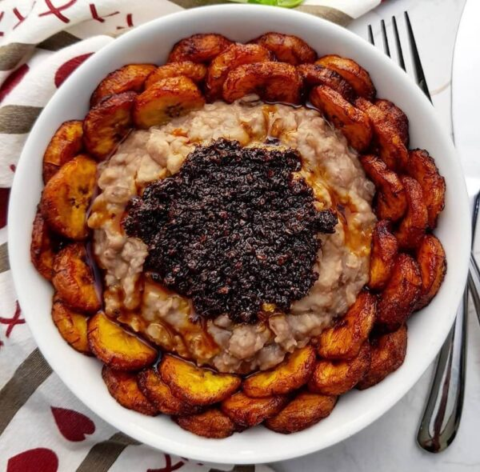

Beans and Plantain
Home

Ewa Agoyin and Fried Plantain
A plate containing boiled beans and sauce (popularly called Ewa Agoyin), paired with finely fried plantains.
Ingredients
- 2 cups honey beans
- 6 cups water
- 1/2 - 1 teaspoon salt
- 1/2 cup shombo (reduce quantity if you don't like it spicy).
- 3 large tatashe/bell peppers
- 2 onions
- 1/2 teaspoon salt
- 1 maggi crayfish
- 1 bouillon cube
- 1/4 cup crayfish
- plantain
- Cooking Oil
Steps
- To an empty pot, add your rinsed beans, water and some salt. Leave to boil for about 30 - 40 minutes.